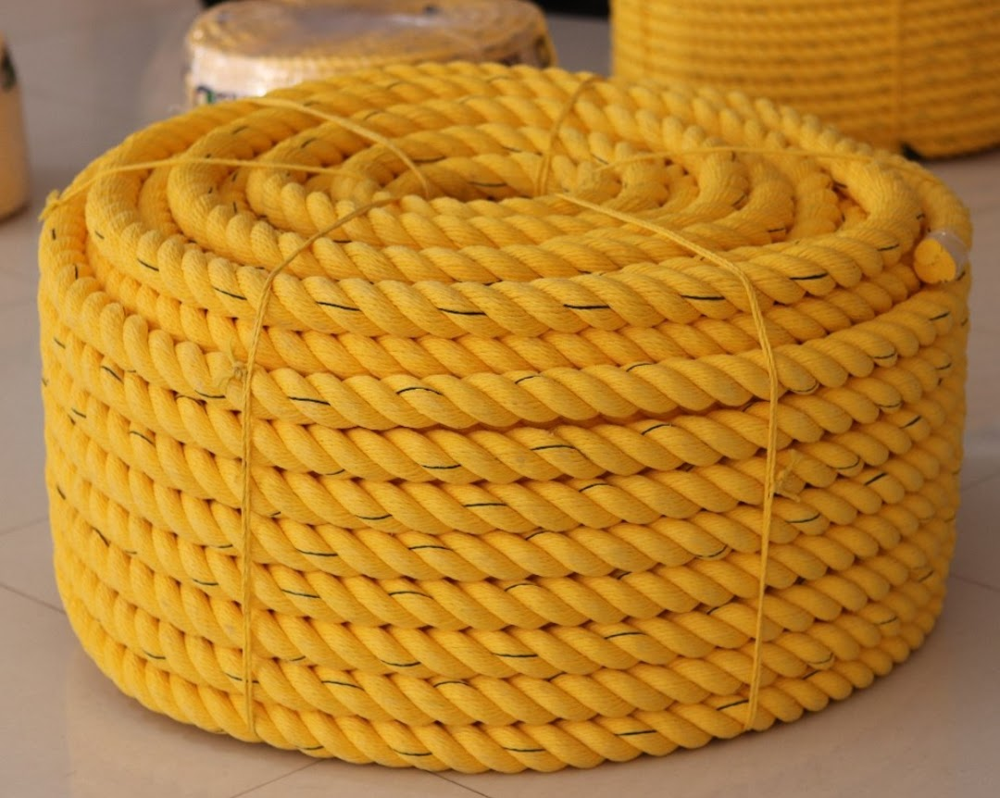
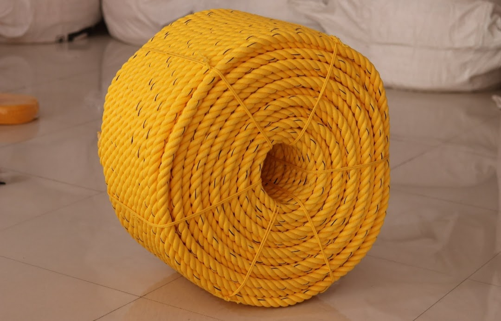
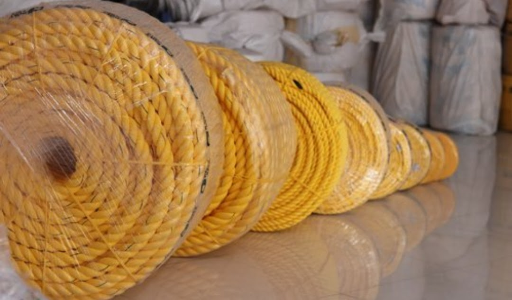
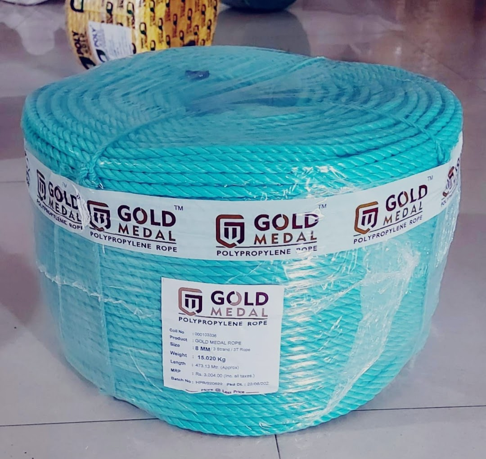
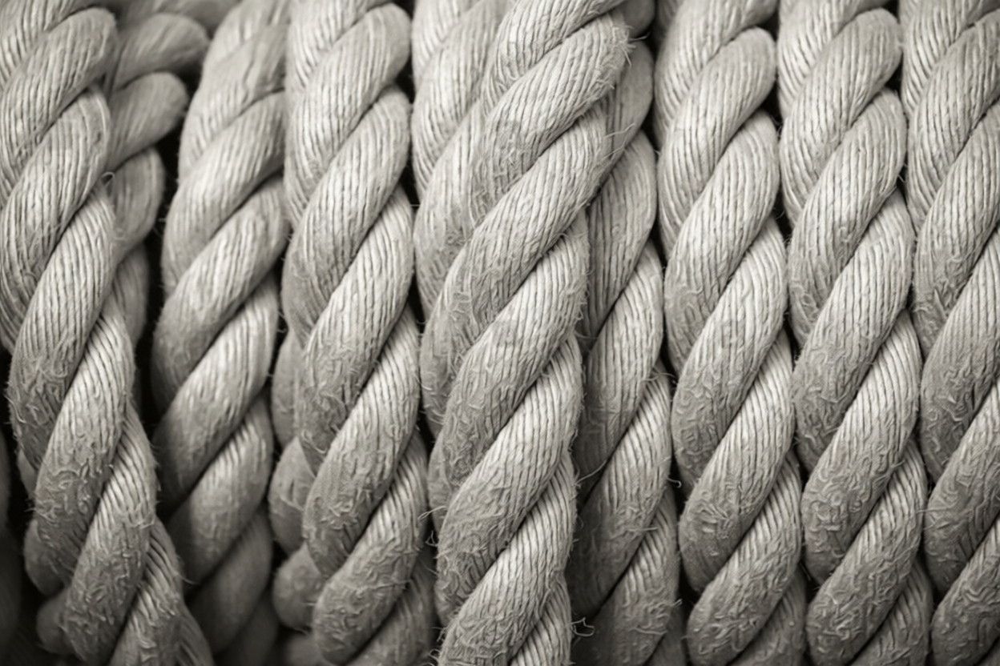
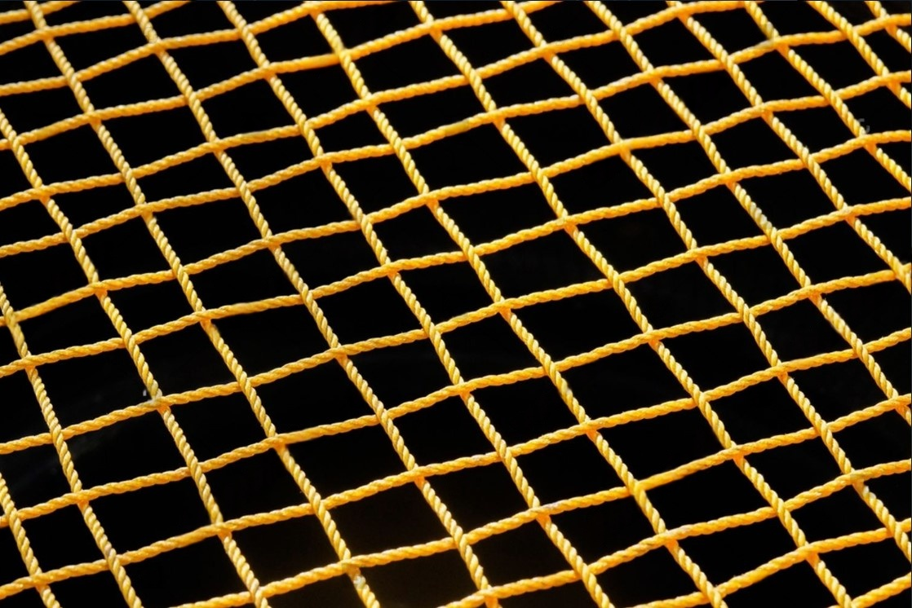
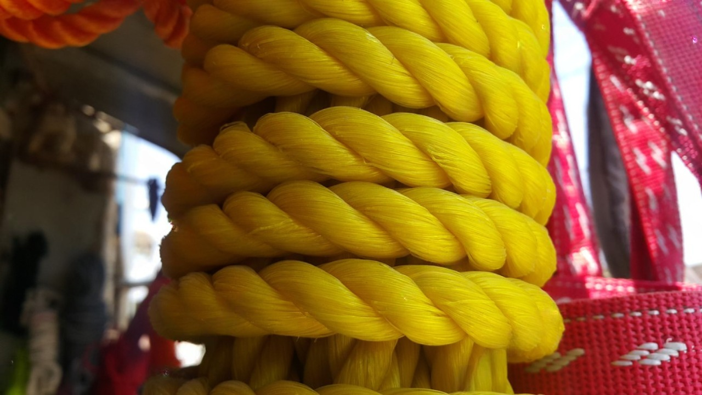

Product Overview
3 Strand PP Ropes are widely used for industrial and
commercial tying applications due to their excellent
strength-to-weight ratio and resistance to moisture.
Manufactured from high-quality polypropylene granules,
these ropes are easy to handle, economical, and suitable
for both indoor and outdoor usage.
Key Features
- Lightweight yet strong construction
- Good tensile strength for daily use
- Resistant to water, rot, and mildew
- Easy to splice and knot
- Cost-effective alternative to natural fiber ropes
Specifications
- Material: Polypropylene (PP)
- Construction: 3 Strand twisted rope
- Diameter: Multiple sizes available
- Colour: Yellow, Blue, White (varies)
- Usage: Tying, bundling, and securing
Applications & Use Cases
- Transport and truck tarpaulin tying
- Construction site usage
- Agricultural bundling and tying
- General industrial and warehouse use
- Marine and fishing support applications
Best Suited For
- Truck operators and transporters for tarpaulin tying
- Construction sites requiring lightweight tying ropes
- Warehouses and factories for daily bundling work
- Agricultural users for crop and material tying
Selection Note
For Indian operating conditions, rope diameter should be
selected based on load and handling frequency. Thicker
diameters are recommended for transport and repeated tying,
while smaller sizes are suitable for light-duty bundling
and packaging applications.
Commonly Used Along With
- Tarpaulin Sheets and Covers
- HDPE or Nylon Ropes for mixed usage
- Hooks, Eyelets, and Lashing Accessories
Product FAQs
-
What are 3 strand PP ropes commonly used for in India?
They are widely used for truck tarpaulin tying, construction work,
agricultural bundling, warehouse operations, and general industrial
securing applications.
-
How do I choose the correct diameter for PP rope?
Diameter should be selected based on load weight and usage frequency.
Thicker ropes are recommended for transport and repeated tying,
while thinner ropes suit light-duty bundling.
-
Are PP ropes suitable for outdoor and monsoon conditions?
Yes. Polypropylene ropes are resistant to water, rot, and mildew,
making them suitable for outdoor and monsoon usage in Indian climates.
-
Can 3 strand PP ropes be used for lifting applications?
These ropes are suitable for tying and securing loads, but certified
lifting slings should be used for overhead lifting and safety-critical
applications.
-
Do PP ropes float on water?
Yes. Polypropylene ropes are lightweight and float on water, making
them useful for marine support and fishing-related applications.
-
Are bulk lengths and custom sizes available?
Yes. PP ropes can be supplied in bulk coils, custom cut lengths,
and specific diameters for transporters, contractors, and industrial buyers.